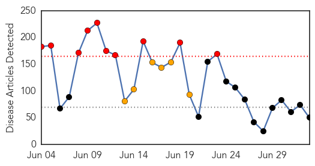
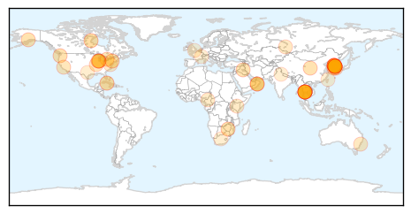

Unknown
30-Day Web Trend
10 alerts, 6 warnings

30-Day Twitter Trend
0 alerts, 0 warnings

Article Locations

Article Confidences

Top Articles:
- 0.996
- Hospital releases Omani man after full recovery from MERS
- 0.995
- Thailand hospital discharges first and only Mers case after he's declared free of virus, SE Asia News & Top Stories
- 0.995
- Ministry reports new MERS case-INSIDE Korea JoongAng Daily
- 0.994
- Thailand's first MERS case to leave hospital, news, Health News, AsiaOne YourHealth
- 0.994
- Thailand's first MERS case to leave hospital
- 0.993
- Thailand's first MERS case to leave hospital
- 0.992
- Thailand's first MERS case to leave hospital
- 0.991
- Thailand's only disease case set to leave hospital
- 0.990
- Omani to fly home after declared free of MERS virus
- 0.989
- Nurse infected with MERS virus in South Korea
- 0.989
- Nurse infected with MERS virus in South Korea
- 0.988
- Thailand's First MERS Case To Leave Hospital
- 0.984
- MERS patients at Samsung Medical moved
- 0.975
- Winter diarrhoea in children
- 0.966
- Lacey motel linked to outbreak of Legionnaires’ disease agrees to close temporarily
- 0.961
- (MERS virus) Health chief casts wary eye at Korea infections
- 0.957
- Washington motel closes after possible Legionnaires' report
- 0.955
- South Korea to waive visa application fee for RI travelers
- 0.948
- Kid dies of AES, five more in hospital
- 0.938
- Hong Kong considers extending health watch on South Korea as new Mers infections confirmed
- 0.924
- Juneau Empire - Alaska's Capital City Online Newspaper
- 0.917
- Chicago Tribune
- 0.917
- Chicago Tribune
- 0.917
- Chicago Tribune
- 0.917
- Chicago Tribune
- 0.917
- Chicago Tribune
- 0.917
- Chicago Tribune
- 0.910
- The world windows to Thailand
- 0.870
- Tick testing increases
- 0.839
- Thailand's first MERS patient cured
- 0.821
- Thailand's first MERS patient cured - Xinhua
- 0.804
- California Woman Catches Fatal Brain Eating Bug After Swim
- 0.801
- Call in for MERS inquiries-INSIDE Korea JoongAng Daily
- 0.770
- Lyme Disease always a summer threat
- 0.728
- Bad belly: food poisoning or tummy bug?
- 0.702
- AIDS: Is there an epidemic in Russia?
- 0.698
- Cuba Eliminates Transmission of HIV and Syphilis from Mother to Child, WHO Says Growing Your Baby
- 0.672
- Dead bat found at Cedar Heights Junior High
- 0.661
- More specialist doctors needed
- 0.661
- An Unwelcome Gift from Gorillas – Pamela K. Bond
- 0.629
- Blacklegged ticks examined as Canada experiences increase in Lyme disease cases
- 0.576
- Cuba first to stop mother-to-child transmission of HIV
- 0.570
- Chronic Wasting Disease Detected in Texas Captive Deer
- 0.570
- Chronic Wasting Disease Detected in Medina County Captive Deer
- 0.564
- S Korea to inject $10bn into economy after Mers outbreak
- 0.559
- Africa needs a health policy to help people with albinism
- 0.554
- Hospitals treating burn ...｜Society｜WCT
- 0.548
- J P Nadda Urges States To Focus On Innovations To Achieve Superior Health Outcomes
- 0.521
- UN MINISTRE LUXEMBOURGEOIS EN VISITE AU CESE POUR LE LANCEMENT DE LA PRÉSIDENCE DE SON PAYS
- 0.514
- Burst water main: Repairs under way but service still disrupted
Showing top 50 articles...
Top Tweets:
-
No tweets found for Jul 03, 2015
Ebola
30-Day Web Trend
0 alerts, 0 warnings

30-Day Twitter Trend
1 alerts, 0 warnings

Article Locations

Article Confidences

Top Articles:
- 1.000
- Recurrence of Ebola transmission in Liberia
- 1.000
- Love in the time of Ebola: How sex is keeping the outbreak alive
- 1.000
- Man tested for Ebola in Liverpool hospital after returning from work visit to West Africa
- 1.000
- Liberia investigating animal link after Ebola re-emerges
- 1.000
- Llandudno ebola scare: how to spot the signs
- 1.000
- Liberia confirms third Ebola case in new outbreak
- 1.000
- As New Ebola Cases Emerge in Liberia, Officials Race to Halt Outbreak
- 1.000
- The Nation Nigeria
- 1.000
- Ebola Returns to Liberia: Where Did It Come From, and Could It Spread?
- 1.000
- 2nd Ebola case declared in Liberia as health workers protest
- 0.999
- Nigeria ‘raises alert level’ after Ebola resurgence in Liberia
- 0.999
- Ebola scare in North Wales as man rushed to hospital to be tested for the deadly virus
- 0.999
- 2nd Ebola case declared in Liberia as health workers protest
- 0.999
- Ebola: Re-emergence of disease in Liberia may be linked to animals
- 0.999
- Liberia announces two more confirmed Ebola cases
- 0.998
- New Ebola containment effort under way in Liberia
- 0.998
- Ebola returns to Liberia, claims new life and sparks fear of new outbreak
- 0.998
- Lagos urges ‘highest possible hygiene standards’ to prevent Ebola resurgence
- 0.998
- Liberia Devices Robust Measures To Control Ebola Resurgence
- 0.997
- Congo and WHO investigate possible Ebola outbreak
- 0.997
- Liberia: Third new case marks a resurgence in Ebola
- 0.997
- Liberian leader says new Ebola outbreak can be contained
- 0.997
- Madison County’s medical community ready for Ebola
- 0.997
- How Ebola returned to Liberia (possibly via dog meat), while Sierra Leone's rich are bribing to break the rules
- 0.992
- Man taken ill in Llandudno being tested for deadly ebola virus
- 0.992
- After Liberia Declared 'Ebola-free,' New Cases Reported
- 0.992
- Congo and WHO investigate possible Ebola outbreak
- 0.986
- Liberian, Sierra Leonean Ebola survivors demand accountability for relief funds
- 0.976
- Ebola: Lagos State Puts Residents On Alert
- 0.974
- No trace of new Ebola transmission
- 0.972
- Ebola: Patient being tested for deadly virus at Royal Liverpool Hospital
- 0.971
- New cases of Ebola pop up in Liberia
- 0.963
- UNICEF teams, supplies arrive in areas affected by new Ebola cases in Liberia - Liberia
- 0.959
- Ebola: Lagos Alerts Residents, Calls For Precautionary Measures
- 0.958
- Health Minister wants surveillance strengthened
- 0.955
- Ebola: Lagos calls for precautionary measures
- 0.954
- N. Korea ramping up efforts to prevent MERS outbreak
- 0.933
- Ebola still stands at 2
- 0.929
- Kandeh Yumkella speaks in Abidjan about post-Ebola recovery
- 0.904
- News in Brief 02 July 2015 (PM)
- 0.898
- The most from the coast
- 0.849
- Rebuilding Liberia Health Care
- 0.838
- West Africa Journalists examine region's health system
- 0.837
- Ellen warns protesting health workers
- 0.829
- CHASL donates 12 ambulances to hospitals « Awoko Newspaper
- 0.815
- Nebraska medical center to get funding for Ebola training
- 0.781
- ‘We Want Mothers to Live’
- 0.617
- Ebola Survivors battling side effects in Margibi
- 0.578
- Six (6) Man Chinese Technical Team depart for Freetown ahead of arrival of 100 buses July 8
- 0.546
- Tests rule out MERS in Czech tour guide
Showing top 50 articles...
Top Tweets:
- 0.912
- Ebola Update: 27514 confirmed probable and suspected cases reported in 3 most affected countries with 11220 deaths. EbolaResponse
- 0.826
- Liberia Reports New Cases of Ebola - New York Times http://t.co/EZXOWY3p7h ebola EVD
- 0.824
- Ebola Has Resurfaced In Liberia With Three New Cases - io9 http://t.co/aFcrYVXT3x ebola EVD
- 0.728
- Ebola alert at Royal Liverpool Hospital as man who travelled to west Africa is ... - Liverpool Echo http://t.co/207C1bNBr4 ebola EVD
- 0.614
- 10000 people in US monitored during Ebola scare - CBS News http://t.co/4h9cU9rizC ebola EVD
- 0.560
- Madison County's medical community ready for Ebola - Alton Telegraph http://t.co/1iosCr8swo ebola EVD
- 0.524
- Man tested for Ebola in Liverpool hospital after returning from work visit to ... - Mir http://t.co/U5SlTJ4NuA ebola EVD
- 0.511
- On Ebola Flap Both Sides Are Wrong - GhanaWeb http://t.co/JVodIuozH4 ebola EVD